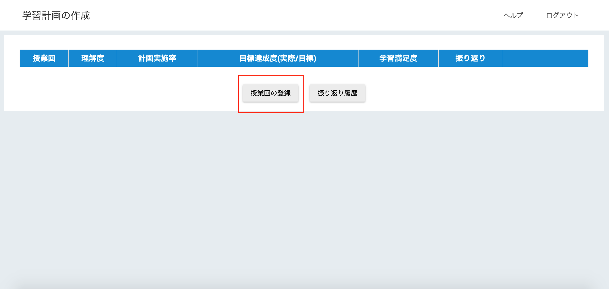
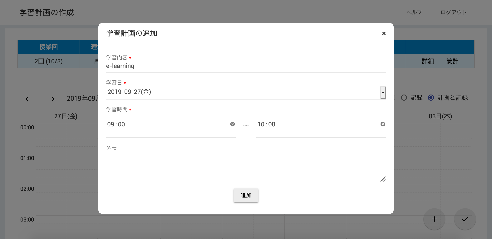
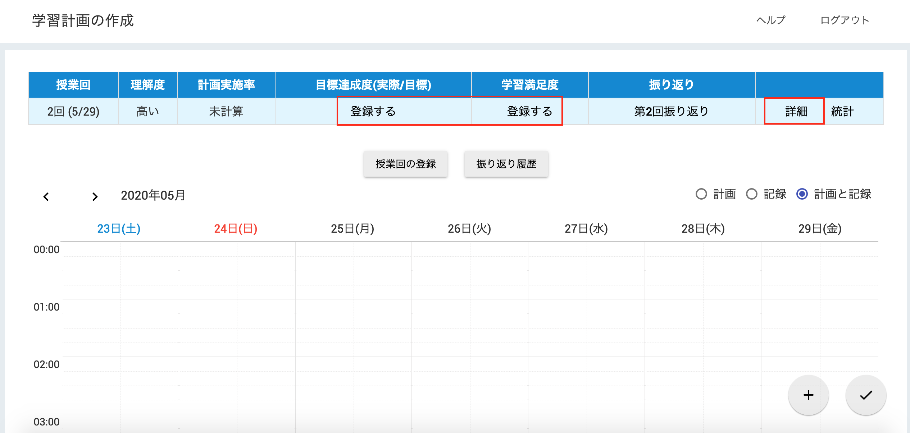
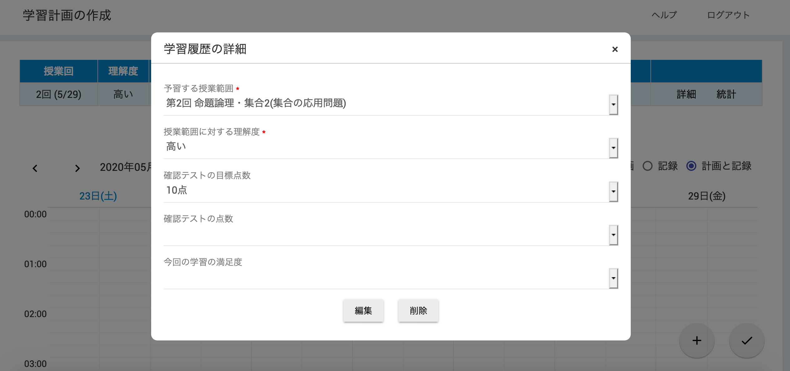

1. 授業回の登録
- 「授業回の登録」ボタンを選択します。 
- 予習する授業範囲、授業範囲に対する理解度、確認テストの目標点数をそれぞれ選択します。
- 選択を終えたら「登録」ボタンを選択します。
2. 学習計画の追加
- 画面右下にある「＋」ボタンを選択します。
- 学習内容、学習日、学習時間、メモ(任意)をそれぞれ入力します。 
- 入力を終えたら「追加」ボタンを選択します。
- カレンダーに追加した内容が反映されます。

3. 学習記録の追加
- 画面右下にある「✔︎」ボタンを選択します。
- 学習内容、学習日、学習時間、メモ(任意)をそれぞれ入力します。
- 入力を終えたら「追加」ボタンを選択します。
- カレンダーに追加した内容が反映されます。
4. 確認テストの点数や学習満足度の登録
- 画面上にあるテーブルから該当する授業回の「詳細」ボタンを選択します。または，テーブルの各項目にある「登録する」ボタンを選択します。 
- 「確認テストの点数」や「今回の学習の満足度」を選択します。 
- 選択を終えたら「編集」ボタンを選択します。
- 選択した内容がテーブルに反映されます。
5. 学習の振り返り(チャットボット)
- 画面上にあるテーブルから該当する授業回の「振り返り」ボタンを選択します。
- 過去の振り返りの履歴を見る場合は「振り返り履歴」ボタンを選択します。
6. その他
- 学習計画の修正
- カレンダーに表示されている学習計画を選択します。
- 「学習計画の詳細」画面が表示されるので、該当する箇所を修正します。
- 修正を終えたら「編集」ボタンを選択します。
- 学習記録の修正
- カレンダーに表示されている学習記録を選択します。
- 「学習記録の詳細」画面が表示されるので、該当する箇所を修正します。
- 修正を終えたら「編集」ボタンを選択します。
- 過去の学習計画や学習記録を参照する
- 画面上にあるテーブルから参照したい授業回を選択します。
- 選択した授業回に追加した学習計画や学習記録がカレンダーに表示されます。
その他，質問などがありましたら g231s002@s.iwate-pu.ac.jp までご連絡ください。